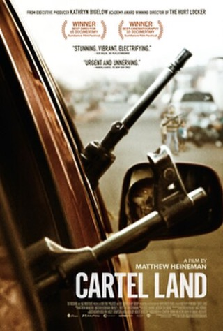

About the film
Directed by Francesca Panetta and Halsey Burgund
In July 1969, much of the world celebrated the “giant leap for mankind” that the successful moon landing constituted. In 2020, nothing is quite so straightforward.
In Event of Moon Disaster
illustrates the possibilities of deepfake technologies by reimagining this seminal event.
What if the Apollo 11 mission had gone wrong and the astronauts had not been able to return home? A contingency speech for this possibility was prepared, but never delivered by President Nixon – until now. The immersive project invites you into this alternative history and asks us all to consider how new technologies can bend, redirect and obfuscate the truth around us.
Call Center Blues
Directed by Geeta Gandbhir
A character-driven, cinematic tale of deportation, migration, displacement and opportunistic capitalism,
Call Center Blues
follows four characters as they struggle to make sense of their lives in Tijuana. Each with a vastly different story, they are all linked by their displacement and the sole choice of call center work they have in a country that is so unfamiliar and oftentimes frightening, yet other times a ray of hope. Tijuana becomes their home, a place defined by the border but yet defiant towards it, a no man's land where everything and everyone feels transient. These characters paint a picture of love, loss and longing - for home, for an American Dream deferred, and for justice.
Dieorama
Directed by Kevin Staake
Abigail Goldman spends her days as an investigator for a public defender's office. But by night, she dreams up gruesome events, which she turns into tiny, precise dioramas. We follow along as she brings her miniature world of murder to life.
Huntsville Station
Directed by Jamie Meltzer and Chris Filippone
Every weekday, inmates are released from Huntsville State Penitentiary in Texas, taking in their first moments of freedom with phone calls, cigarettes, and quiet reflection at the Greyhound station up the block.
Status Pending
Directed by Priscilla González Sainz
With immigration law under attack, five first-generation immigration lawyers strive to help immigrants obtain safety and status in the United States. Through a chronicle of their professional and personal lives,
Status Pending
aims to present the effects of the current administration through the perspectives of active immigration lawyers in the Los Angeles area.
At the festival
More films on these topics
 PoisonedJoy Ash2025 · 90 min
PoisonedJoy Ash2025 · 90 min TataLina Vdovîi, Radu Ciorniciuc2025 · 82 min
TataLina Vdovîi, Radu Ciorniciuc2025 · 82 min Trade SecretAbraham Joffe2025 · 98 min
Trade SecretAbraham Joffe2025 · 98 min The Black SwanMads Brügger2025 · 90 min
The Black SwanMads Brügger2025 · 90 min
Cartel LandMatthew Heineman2015 · 100 min A Month in MinnesotaAnnie Sundberg2026 · 40 min
A Month in MinnesotaAnnie Sundberg2026 · 40 min